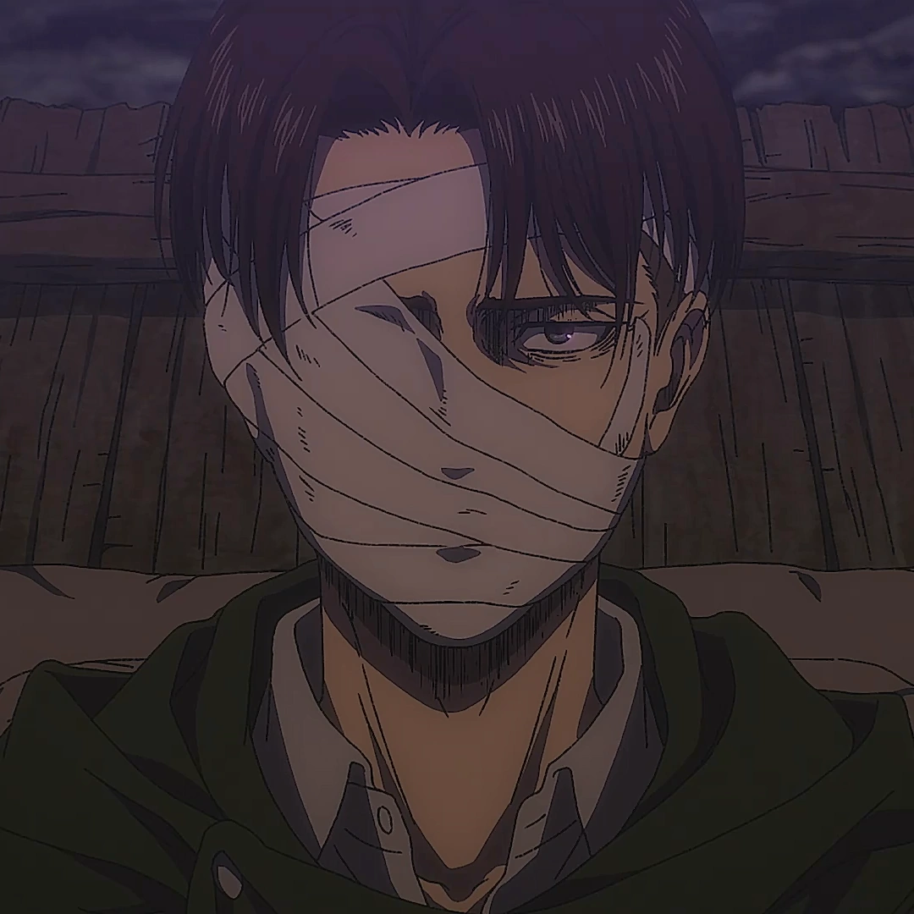

Oque é?
Shingeki no Kyojin (進撃の巨人 lit. Titã de Ataque?) também conhecido pelo título em inglês Attack on Titan, é uma série de mangá escrita e ilustrada por Hajime Isayama. É ambientado em um mundo onde a humanidade vive dentro de cidades cercadas por três enormes muralhas que os protegem dos gigantescos humanóides devoradores de humanos chamados de Titãs; a história segue Eren Yeager, que jura exterminar os Titãs após um Titã causar a destruição de sua cidade natal e a morte de sua mãe. Shingeki no Kyojin teve seus capítulos publicados na revista mensal de mangás shōnen Bessatsu Shōnen Magazine da editora Kodansha entre setembro de 2009 a abril de 2021, com os seus capítulos compilados em 34 volumes tankōbon. Uma adaptação em uma série de anime de televisão do mangá foi produzida pelos estúdios Wit Studio (temporadas 1–3) e MAPPA (temporada 4). A primeira temporada de 25 episódios foi transmitida de abril a setembro de 2013, seguida por uma segunda temporada de 12 episódios transmitida de abril a junho de 2017. Uma terceira temporada de 22 episódios foi transmitida em duas partes, com os primeiros 12 episódios transmitidos de julho a outubro de 2018 e os últimos 10 episódios transmitidos de abril a julho de 2019. A primeira parte da quarta e última temporada foi transmitida entre dezembro de 2020 a março de 2021, e a segunda parte estreou em janeiro de 2022. Shingeki no Kyojin tornou-se um sucesso comercial e da crítica mundial. Em 2022 bateu-se a marca de 110 milhões de cópias impressas de seus volumes tankōbon em todo o mundo, tornando-se uma das séries de mangá mais vendidas de todos os tempos. Ele ganhou 15 prêmios, incluindo o Prêmio de Mangá Kodansha, Prêmio Attilio Micheluzzi e o Prêmio Harvey.
Historia
Os seres humanos se depararam com a repentina aparição dos Titãs no distrito de Shiganshina após mais de um século de paz. Eren Yeager, Mikasa Ackerman-sua irmã adotiva- e seu amigo de infância, Armin Arlert, testemunham o aparecimento de uma Titã de 60 metros, o Titã Colossal, e outro menor, o Titã Blindado, que abrem uma brecha na muralha Maria. Os Titãs, em seguida, invadem a cidade e fazem uma carnificina, incluindo a morte da mãe de Eren, que é devorada diante de seus olhos. Ele então decide se vingar e matar todos os Titãs, entrando para Divisão de Exploração. Cinco anos mais tarde, os três graduados cadetes foram enviados para o distrito de Trost, uma das cidades da fronteira que se localiza na Muralha Rose, quando o Titã Colossal reaparece e faz novamente uma brecha na muralha; na batalha que se seguiu, Eren foi devorado por um dos Titãs na frente de Armin. Pouco tempo depois, um Titã aparece e ataca os outros Titãs, em vez de seres humanos; esse acaba se revelando o próprio Eren, que de alguma forma adquiriu a capacidade de se transformar em Titã. Embora seja considerado uma ameaça por alguns, ele ajuda os soldados a recuperar o distrito de Trost fechando a brecha da muralha. Depois de ser levado à justiça, ele é recrutado pela Divisão de Exploração com a supervisão da Divisão de Exploração de Operações Especiais, liderada pelo capitão Levi. Em uma expedição para Shinganshina em busca de respostas para o mistério em torno de Eren, os soldados são atacados por um Titã Fêmea que tenta capturar Eren. Embora os soldados são capazes de capturar rapidamente a Titã Fêmea, ela se liberta e mata todos da equipe de Levi Ackerman, forçando o fim da expedição. Armin descobre que a Titã Fêmea é Annie Leonhardt, um dos cadetes que ensinaram Eren a lutar, e elabora um plano para capturá-la no distrito Stohess. A missão foi um sucesso, embora o alvo passa a proteger-se dentro de um cristal. Durante esta operação, os danos colaterais revelam que os Titãs residem dentro das paredes das muralhas.
Personagens
-
Eren Yeager
-
Levi Ackerman
 -
Mikasa Ackerman
-
Hange Zoë

-
Sasha Blouse

-
Kenny Ackerman

-
Keith Shadis

-
Porco Galliard